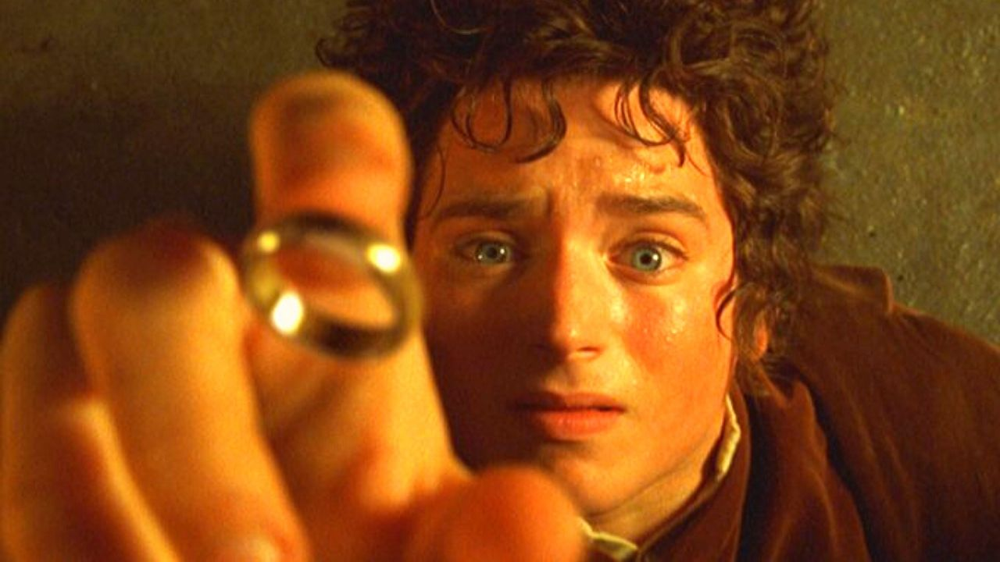

Frodo Bolseiro é um hobbit do Condado, uma terra verdejante e pacífica da Terra Média. Nascido em 2968 da Terceira Era, ele é sobrinho de Bilbo Bolseiro e herdeiro de sua casa e do Um Anel.
Apesar de sua natureza reservada e gentil, Frodo foi escolhido para uma missão que mudaria o destino do mundo: destruir o Um Anel nas profundezas de Mordor.
O Condado é lar dos hobbits, seres pequenos e pacíficos que valorizam a simplicidade, a amizade e a boa comida. Frodo cresceu em Bolsão, cercado por histórias de aventuras contadas por Bilbo.
Frodo tornou-se o Portador do Anel e partiu com a Sociedade do Anel. Enfrentou Nazgûl, traições, batalhas e a corrupção do próprio Anel. Sua jornada culminou na Montanha da Perdição, onde o Anel foi finalmente destruído.
“Desejo que o Anel nunca tivesse vindo a mim. Desejo que nada disso tivesse acontecido.”